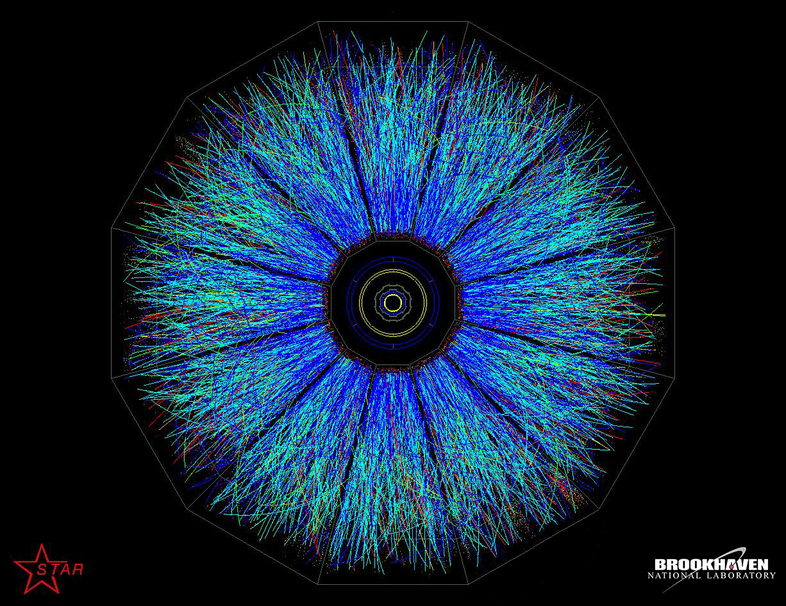
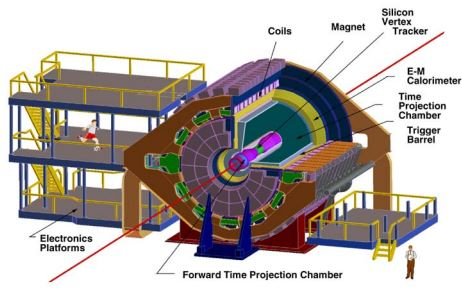

Relativistic Heavy Ion Collider
RHIC (Relativistic Heavy Ion Collider)
In 2006, I spent my summer working with Professor Calderón, analyzing data from the Heavy Ion Collider at Brookhaven Nation Laboratory. Our goal was to understand the formation of the universe in the first moments after the big bang. We simulated those extreme conditions with high energy heavy ion collisions, meaning gold ion slamming together near the spped of light. By tracking the trajectories of the resulting particles, we could infer their mass, charge, and some properties of their behavior.
Particles are accelerated to the required energy levels, at which point they are diverted into colliding trajectories. When ions collide, they explode outward, generating an assortment of secondary particles. STAR (the Solenoidal Tracker At Rhic) is the particle tracker that allows us to record the trajectories of these particles. As the particles explode outward, they are subjected to very powerful electromagnetic fields which bend the particles into helical trajectories. The amount and direction of curvature tells us about the charge and mass of the particles.
My main contribution was writing classes in C++ to standardize the computational geometry used to understand these particle trajectories. I wrote a helix class, and used it to refine the geometry of particle detection. I mostly did this by ensuring that all trajectories went through the beam path, and the centered on the same collision point.